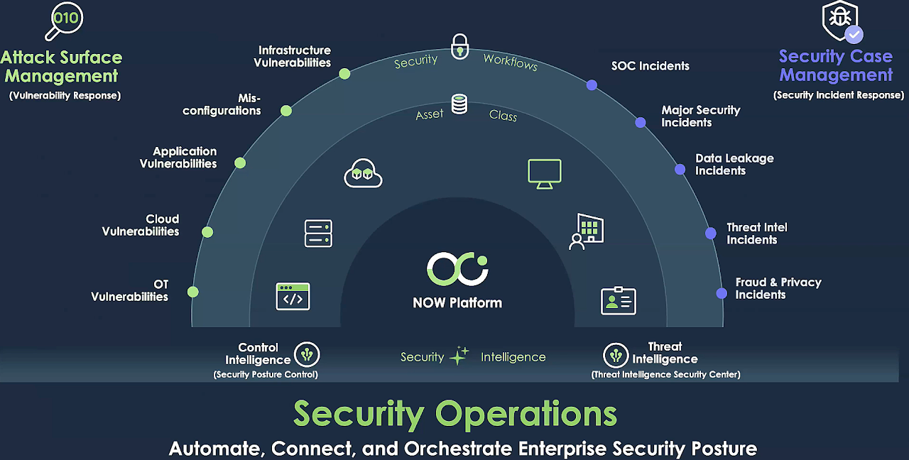

Configuration Compliance
Welcome to Configuration Compliance
Configuration Compliance is the ongoing process of ensuring that all systems and devices within an organization adhere to predefined security standards and baselines. It involves continuously monitoring and assessing the configurations of hardware and software to identify any deviations from established policies and industry best practices. This process often utilizes automated tools to scan systems, detect vulnerabilities, and generate reports on compliance status. By enforcing configuration compliance, organizations can minimize security risks, improve system stability, and demonstrate adherence to regulatory requirements. It helps prevent unauthorized changes, reduces the likelihood of security breaches, and ensures that systems are configured in a secure and consistent manner. Ultimately, configuration compliance plays a crucial role in maintaining a robust security posture and protecting sensitive data.
